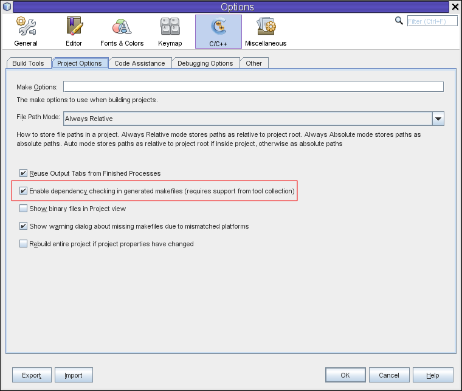

Apache NetBeans
Apache NetBeansLatest release
Verificação da Dependência de Make
| This tutorial needs a review. You can open a JIRA issue, or edit it in GitHub following these contribution guidelines. |
Contribuição de Alexey Vladykin Março de 2014 [Número da revisão: V8.0-1]
Este tutorial mostra como ativar o NetBeans IDE para verificar as dependências do arquivo em seus projetos durante a criação. A verificação de dependência é executada pelo utilitário make por meio de instruções em Makefile .

Figure 1. O conteúdo desta página se aplica ao NetBeans IDE 7.3, 7.4 e 8.0
Requisitos
Para seguir este tutorial, são necessários os recursos e o software a seguir.
| Software | Versão Necessária |
|---|---|
NetBeans IDE (incluindo o suporte ao C/C++) |
|
Java Development Kit (JDK) |
Consulte as Instruções de Instalação do NetBeans IDE e a + Configuração do NetBeans IDE para o C/C+/Fortran para obter informações sobre o download e a instalação do software necessário.
Introdução
Grandes projetos C/C++ consistem em milhares de arquivos. Por exemplo, o kernel Linux tem cerca de 20.000 arquivos. Se estiver desenvolvendo um projeto e quiser recriá-lo após uma pequena alteração, por exemplo, correção de uma linha, há duas opções.
-
Recriação integral (ação Limpar e Construir). É menor, mas garante um resultado de construção consistente.
-
Reconstrução incremental (ação Construir). É mais rápida, mas recriará corretamente tudo que deve ser recriado?
O maior problema da recriação incremental é a presença de diretivas #include , que incluem o conteúdo de um arquivo em outro arquivo. O arquivo incluído é conhecido como dependência de arquivo. A modificação do arquivo incluído deve ser tratada como modificação de todos os arquivos que o incluem. As inclusões indiretas (A inclui B, B inclui C ⇒ A inclui C) tornam o problema até mais difícil.
O NetBeans IDE suporta verificação automática das dependências do arquivo e faz seu melhor para tornar o trabalho de construção incremental correto. Se você alterar um arquivo do cabeçalho que estiver incluído em algum de seus arquivos de código-fonte e, em seguida, clicar em Construir, o IDE recriará somente estas partes do projeto que realmente dependem do cabeçalho alterado. Esta funcionalidade economiza tempo e garante resultados de construção consistentes.
Ativando a Verificação de Dependência de um Projeto
A verificação de dependência pode ser controlada para cada projeto específico. Talvez você queira certificar-se de que ela está ativada.
Para ativar a verificação de dependência para um projeto:
-
clique com o botão direito do mouse no projeto na janela Projetos e escolha Propriedades.
-
Na caixa de diálogo Propriedades do Projeto, selecione o nó Construir na lista Categorias.
-
Nas propriedades de construção, marque a caixa de seleção Ativar Verificação de Dependência de Make.

Ativando a Verificação de Dependência por Default para Novos Projetos
Você pode definir um estado default para verificação de dependência, de forma que novos projetos que você criar sejam ativados automaticamente para verificação de dependência de make.
Para ativar a verificação de dependência para todos os novos projetos criados no IDE:
-
Escolha Ferramentas > Opções no menu principal do IDE.
-
Clique no botão C/C++ no painel superior.
-
Clique na guia Opções do Projeto.
-
Marque a caixa de seleção para Ativar verificação de dependência nos makefiles gerados

Observações
-
A verificação de dependência automática trabalha para projetos C/C++ que foram criados no IDE (projetos gerenciados). O IDE cria lógica de verificação de dependência para o
Makefilegerado. Para projetos criados com os códigos-fonte existentes você pode contar com a lógica de verificação de dependência (se houver) noMakefileexistente. -
A verificação de dependência requer suporte de sua coleção de ferramentas (
makee compiladores). Ela foi testada com a coleção de ferramentas do Oracle Solaris Studio e as coleções de ferramentas GNU, incluindo Cygwin e MinGW. -
A verificação de dependência funciona quando os compiladores do Oracle Solaris Studio são usados com o
makedo Oracle Solaris e quando os compiladores GNU são usados comgmakede GNU. A mistura demakedo Oracle Solaris com os compiladores GNU e vice-versa não é suportada.
O restante do artigo é para os usuários avançados que querem saber o que acontece nos bastidores do IDE.
Processo de Construção (make e makefiles)
O processo de construção de cada projeto C/C++ no NetBeans é descrito em um Makefile , um arquivo de formato especial conhecido pelo utilitário make . Quando você constrói ou limpa seu projeto do GUI, o IDE chama make , que executa o Makefile. Esta abordagem permite que você construa facilmente seu projeto fora do IDE usando make : vá para seu diretório de projeto e digite make help para obter instruções.
Os Makefiles usados pelo NetBeans IDE para um projeto C/C++ são mostrados abaixo.

O Makefile mestre é gerado uma vez e você pode editá-lo manualmente. Os makefiles no diretório nbproject não são destinados para edição manual; eles são atualizados automaticamente pelo IDE. O arquivo Makefile-CONF.mk na ilustração representa vários arquivos para todas as configurações de seu projeto, como Makefile-Release.mk , Makefile-Debug.mk etc.
Para um projeto gerenciado, o IDE gera todos os makefiles e insere instruções adequadas para a verificação de dependência. Para um projeto criado dos códigos de origem existentes, a verificação de dependência funcionará só se o Makefile contiver tais instruções, porque o NetBeans IDE não altera o Makefile existente.
Conceitos Básicos sobre a Geração de Dependência
Se quiser que o make verifique as dependências do arquivo incluídas durante a construção, então insira as informações de dependência no Makefile . Infelizmente não há nenhuma forma conveniente de fazer isso para todos os utilitários e compiladores de make . Primeiro, você deve detectar qual make está sendo executado e, em seguida, gerar as instruções de verificação de dependência correspondentes.
O make do Oracle Solaris tem uma solução muito simples. Uma regra especial .KEEP_STATE: no Makefile instrui make para consultar o compilador sobre as dependências de arquivo e as armazena em um arquivo temporário. Na próxima vez que o projeto for reconstruído, o make carrega esse arquivo temporário, analisa as dependências armazenadas lá e determina quais cabeçalhos foram alterados e quais arquivos de objetos devem ser recompilados.
Para make de GNU (chamado gmake ) a solução é muito mais complexa. Você deve solicitar explicitamente ao compilador para gerar as informações de dependência e, em seguida, incluí-la no Makefile . A ideia é informar flags especiais para o compilador, de forma que o compilador gere informações de dependência para cada arquivo do código-fonte compilado. Na próxima vez que o projeto for recriado, as informações de dependência serão coletadas e incluídas no Makefile .
Implementação
O código a seguir é adicionado ao nbproject/Makefile-impl.mk . Ele detecta qual make está sendo executado e coloca o código de verificação de dependência correspondente no arquivo .dep.inc . O make de GNU detectou a presença da variável MAKE_VERSION . Se MAKE_VERSION não for definida, então as instruções específicas de make do Solaris são geradas.
# dependency checking support
.depcheck-impl:
@echo "# This code depends on make tool being used" >.dep.inc
@if [ -n "${MAKE_VERSION}" ]; then \
echo "DEPFILES=\$$(wildcard \$$(addsuffix .d, \$${OBJECTFILES}))" >>.dep.inc; \
echo "ifneq (\$${DEPFILES},)" >>.dep.inc; \
echo "include \$${DEPFILES}" >>.dep.inc; \
echo "endif" >>.dep.inc; \
else \
echo ".KEEP_STATE:" >>.dep.inc; \
echo ".KEEP_STATE_FILE:.make.state.\$${CONF}" >>.dep.inc; \
fiO código a seguir é adicionado ao nbproject/Makefile-${CONF}.mk . Ele instruiu make para ler o .dep.inc gerado anteriormente e executa instruções dele.
# Enable dependency checking
.dep.inc: .depcheck-impl
include .dep.incA regra .dep.inc: .depcheck-impl é adicionada para evitar a falha de construção quando .dep.inc não existe. Há apenas um caso em que isso ocorre: quando você compila o arquivo único da janela Projetos. Neste caso, make executa o arquivo nbproject/Makefile-${CONF}.mk diretamente.
Consulte Também
Consulte a link:https://netbeans.org/kb/trails/cnd.html[+Trilha do Aprendizado C/C+] para obter mais artigos sobre o desenvolvimento com C/C/Fortran no NetBeans IDE.